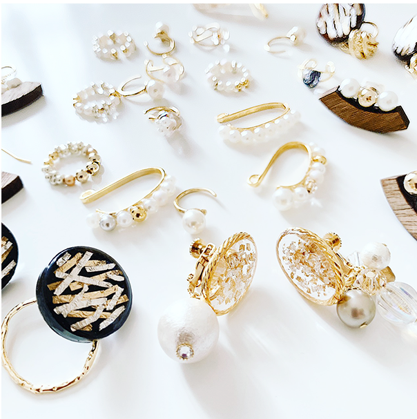

Story

naturally + happiness = naturapiness
naturally + happiness = naturapiness
（自然・ありのままの） （幸せ）
ブランド名は、naturapinessとhappinessをかけ合せて
誕生しました。
素材そのものが持つ美しさを活かしたアクセサリーは
それを身に着ける人自身の魅力を自然と引き立て
またそれを見る人も幸せな気持ちになるという
想い込められています。